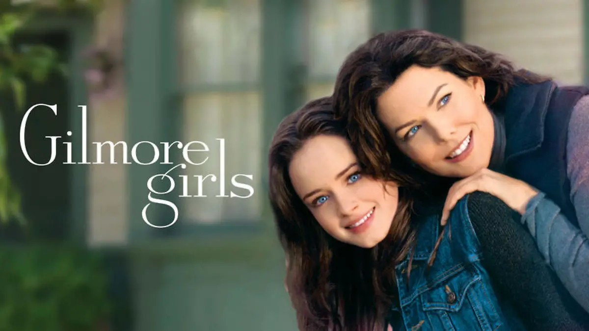
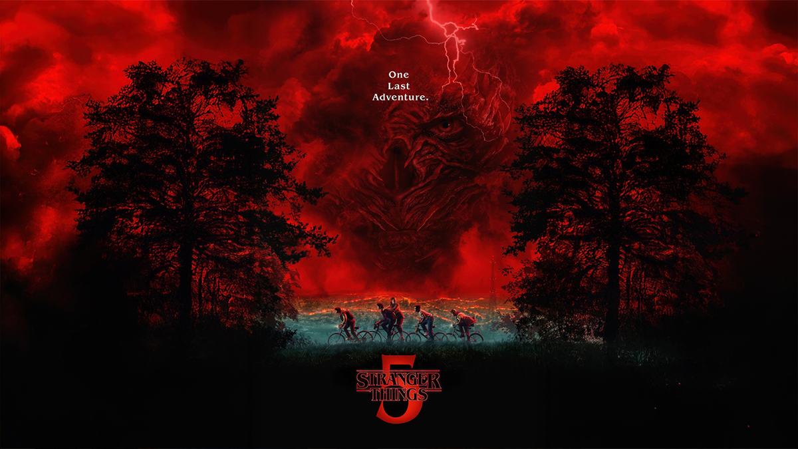
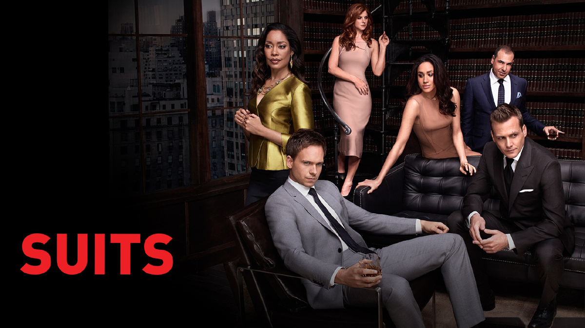
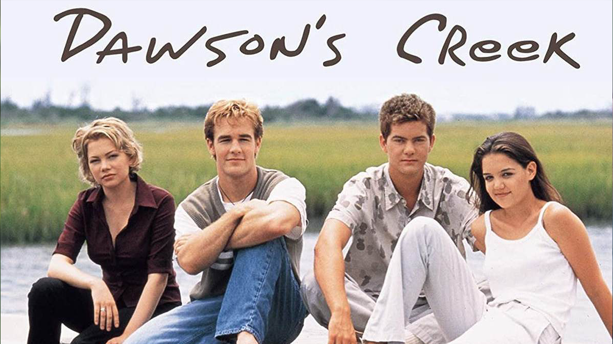
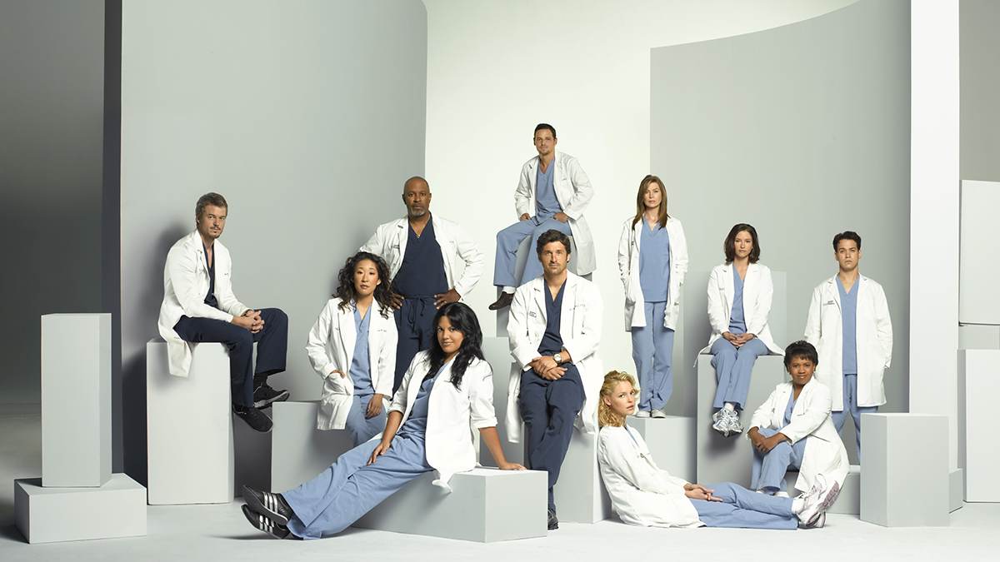
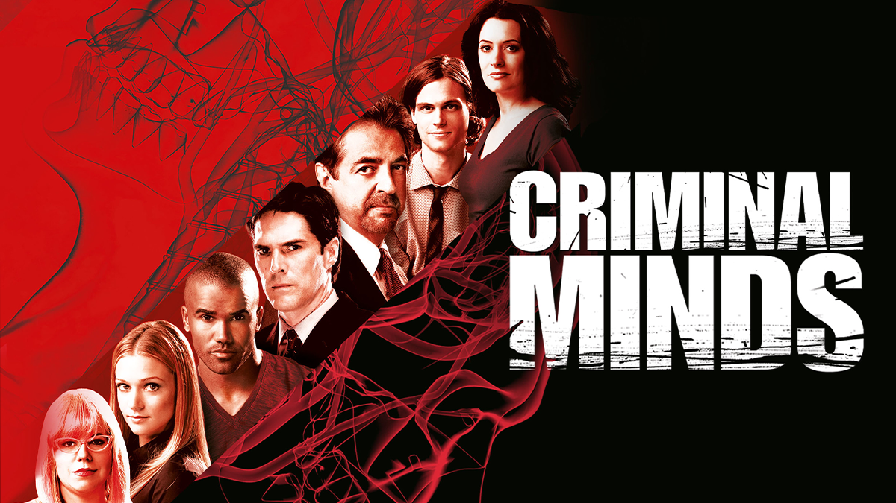

Gilmore Girls: Gilmore Girls
Gilmore Girls is a relatable show following the bond between a girl and her mother. It has earned its spot due to the wholesome and comforting experience and its bingeable quality.
I spend my free time watching and rewatching TV. I am an unbiased critic and have seen a wide variety of TV shows.
Click PlayThe countdown
These shows all have strong "found family" dynamics that connected with me through the screen.

Gilmore Girls is a relatable show following the bond between a girl and her mother. It has earned its spot due to the wholesome and comforting experience and its bingeable quality.

Stranger Things is a supernatural drama following a group of kids and teenagers as they face monsters. It earned its spot due to the character development and highstake storylines.

Suits is a TV drama focusing on the eventful, high-stakes lives of two lawyers. It has earned its spots due to the strong, intresting character bonds and the creative, compelling episodes that captivate audiences.

Dawson's Creek is a late 90s drama, centered around the everyday lives of teenagers. It earned its spot due to relatability and vulnerable storylines.

Grey's Anatomy is a long-lasting medical drama. It has earned its spot because over the course of 23 seasons, every epsiode and storyline is still original.

The best one
Criminal Minds is a TV drama following a unit of the FBI as they solve cases. This show teaches you a lot about psychology and you learn about why people do what they do, specifically psychopaths. This show has earned its number one spot due to the suspenseful, original storylines and the emotional investment in victims and agents.
Method
The overall plot and originality of episodes. The character developments and character relationships. Lastly, I judged on the emotional investment and actor performances.
I purposefully ignored the production and musical aspect of these shows. While these things matter, they do not make or break a show for me. I am much more drawn to performances and plot. When I look back on a show, I never think about the production or music.
My ranking is based solely on emotions and personal enjoyment. My ranking focuses less on objectively good storytelling and more on enjoyment and rewatchability.